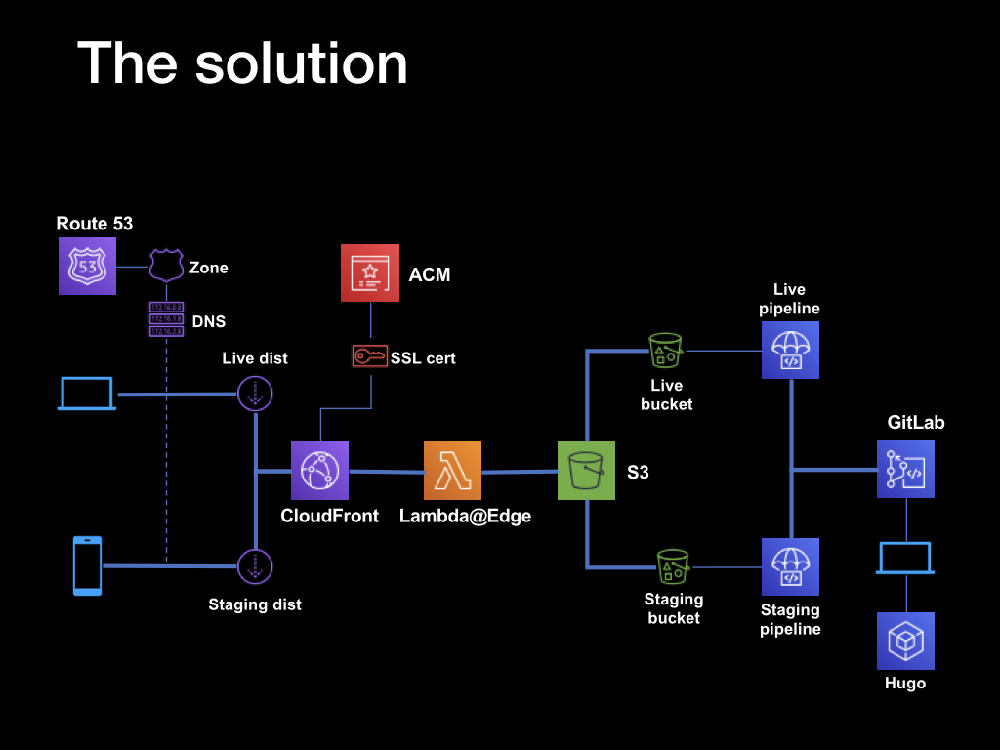

Web serving with AWS and continuous deployment
This is a writeup of a talk that Tim Duckett, Head of Engineering at Finleap Build, gave to the Berlin AWS Users Group in October 2019, showing how AWS services can be combined with GitLab and static site generators such as Hugo to serve static HTML sites robustly and at minimum cost. It’s also a good example of how to combine multiple AWS services such as Cloudfront and Lambda functions to build more sophisticated features.
The workflow described here is how this site is powered, so you’re reading a practical example of the process in action.
Why AWS?
A website is a basic requirement of business in 2019 - no matter how sophisticated or offline your product, it’s one of the first things you’re going to need almost from Day One.
There’s an almost overwhelming range of options, from fully-managed hosted services to bare-metal servers. But if you’re already involved in the AWS ecosystem, there’s a surprisingly cheap, amazingly robust, and relatively straightforward hosting solution based on S3 and CloudFormation. If your site is static - and let’s face it, most sites are, even if they’re using dynamic backends like PHP - then this option is worth looking at.
The basic concept is to use an S3 bucket configured for web serving as the backend to serve a site based on static HTML. A CloudFormation content distribution network acts as both a resilience layer, and allows Lambda functions to act as rewrite rules. Finally an Amazon Certificate Manager-provision SSL certificate allows the site to be served securely.

Working from the right-hand side, the static HTML pages are generated by the Hugo static site generator running on a local machine. The resulting files are committed to a Gitlab repository, which has a continuous integration/deployment pipeline configured to build the site, and upload the resulting assets to S3 buckets.
The build process takes place remotely in a Docker instance provisioned by the GitLab runners, so there are no dependencies on the local system, and no need to manually manage the site assets. The build and deplot processes are triggered by commits and pushes to the remote repo - by pushing to specific branches it’s possible to differentially deploy to live, staging and development sites, as well as adopt a pull request-based deployment workflow.
There are two pipelines and two buckets, one for the live version and one for staging. This is fronted by a combination of a CloudFront distribution and a LamdaEdge function - the distribution acts as a content distribution network, and the LamdaEdge function rewrites certain HTTP requests to work around the interation between a limitation of S3 webhosting and the default Hugo URL structure.
So that the sites can be accessed across HTTPS, Amazon Certificate Manager is used to generate SSL certificates for the two sites, live and staging. Using wildcard certificates, both sites can be secured using a single certificate. The domain records are hosted within Route53, which supplies the DNS service.
The net effect is that once set up, site updates can be deployed simply by making Git pushes. Non-master branches are deployed automatically to the staging instance; while deployments or merged pull requests to the master branch trigger a live site deployment. Through the use of the CloudFront CDN, the site should be resiliant to load spikes - in other words, Reddit-proof.
The process
- Static site generation
- Serving web content from S3
- Setting up SSL
- Setting up the Cloudfront CDN
- Updating the domain
- Setting up continuous deployment
- Creating a CI/CD user with S3 access
- Updating GitLab S3 permissions
- Cleaning up Hugo URLs
- Cleaning up Hugo error pages
1. Static site generation
 Where the HTML, CSS and other assets come from isn’t linked in any way to the use of AWS services, so the choice comes down to what works for you.
Where the HTML, CSS and other assets come from isn’t linked in any way to the use of AWS services, so the choice comes down to what works for you.
In our case, that’s Hugo - a static site generator written in Golang that takes Markdown-formatted files and spits out static HTML very, very quickly. It’s available on Mac, Linux and Windows platforms, and hits the right balance between power and complexity.
2. Serving web content from S3
The fact that S3 buckets can act as a (basic) web server isn’t all that well-known, but it’s a) simple, albeit limited and b) cheap. The limitations are that there is absolutely no backend processing whatsoever - so you’re limited to either static sites or client-side processing; and there are some restrictions around how the objects are retrieved. We’ll use Lambda functions to work around retrieval limitations later.
 To enable web hosting from an S3 bucket, select the
To enable web hosting from an S3 bucket, select the Static Website Hosting pane from the Properties tab
 Then check the
Then check the Use this bucket to host a website option. You’ll be presented with the URL for the bucket (constructed from the bucket name and an S3 URL), and the option to specify an index page. For this to work with the Hugo file and directory structure, this should be set to index.html
 Now you can upload an
Now you can upload an index.html file from the web UI, setting the public permissions to Public Read Access. Load the URL shown earlier in a browser, and the file should be served through a standard HTTP request.
3. Setting up SSL
Generating SSL certificates and configuring web servers to use them used to be painful. Services like LetsEncrypt have made it easier, but combining AWS services makes the process (almost) one-click.
 To begin the process, switch to the AWS Certificate Manager console, and select the
To begin the process, switch to the AWS Certificate Manager console, and select the Provision Certificates option.
To begin the process, switch to the AWS Certificate Manager console, and select the Provision Certificates option.
 Next, add domain names. It’s important to note here that although you can use wildcards to add multiple subdomains to the certificate, there are some limitations. Specifically, although
Next, add domain names. It’s important to note here that although you can use wildcards to add multiple subdomains to the certificate, there are some limitations. Specifically, although *.domain.com will add www.domain.com, subdomain.domain.com and so on, it won’t add the ‘bare’ root domain itself - domain.com. In the screenshot example, there are two domains added - the bare root domain (aws-user-group-berlin.de) and a wildcard (*.aws-user-group-berlin.de). This will cover www.*, staging.* and so on.
 The next step is to verify the domains by adding a
The next step is to verify the domains by adding a CNAME record with a generated value. This will be checked by ACM to ensure that you’ve got the rights (or at least enough control) over the domain to add SSL certificates. If your domain is hosted in Route53, just allow ACM to add the record automatically. If not, you’ll need to add the CNAME record manually, and wait for the ACM verification process to complete.
 Eventually (after 30 mins or so) the verification will be complete, and the certificate status will update to
Eventually (after 30 mins or so) the verification will be complete, and the certificate status will update to Issued. Make a note of the ARN of the certificate, which you’ll need in the next step.
4. Setting up the CloudFront CDN
CloudFront is a content distribution network that caches assets around a network of edge locations, so that they can be retrieved from a source closer to the requester with lower latency. It also has the added benefit of reducing the load on the backend service, as it’s the CDN that receives the hits and serves the response.
The thing to bear in mind when setting up (or administering) a CloudFront CDN is that it takes time for changes to ripple out to the edges. In AWS terminology, that’s known as deploying - CloudFront deployments can take anything up to an hour to complete, so it’s always worth planning ahead and batching up changes where possible.
 To begin the process, open the CloudFront console and select the
To begin the process, open the CloudFront console and select the Create distribution option. You’ll then be presented with the choice of Web or RTMP distribution - that second one is only relevant if you’re serving media content, so select Web.
 Now you’ll see the various options available. Start by selecting the
Now you’ll see the various options available. Start by selecting the Origin domain name dropdown, and selecting the S3 bucket that you configured earlier.
Then update the remaining options as follows:
Restrict bucket access: YesOrigin access identity: Create a New IdentityGrant read permissions on bucket: Yes, Update Bucket PolicyViewer protocol policy: Redirect HTTP to HTTPSObject caching: Customize- all
TTL values: 0 Alternate Domain Names: the domain names from the SSL certificate earlierSSL Certificate: Custom SSL Certificate- Custom SSL certificate dropdown : Select the SSL certificate created in step 3
Default root object: index.html
When all the options are configured, click the Create Distribution button to start the creation process.
 After what will seem like a lengthy pause, the status of the distribution will change from
After what will seem like a lengthy pause, the status of the distribution will change from In progress to Deployed. Click on the ID to see the configured options.
 Part way down the list, you’ll see the
Part way down the list, you’ll see the Domain Name value - copy this, and open it up in a browser. If the distribution has been deployed correctly, you’ll see the contents of the index.html file that you created in step 1.
5. Updating the domain
Having created the CloudFront distribution, we need to update the domain so that requests will be fowarded to the distribtion, not whatever value is currently set. The process for this will depend on the specific registrar or DNS service that you’re using - what follows is for Route53:
 Open the Route53 console, and select the relevant domain (or Hosted Zone in AWS terminology). Then you’ll need to update the
Open the Route53 console, and select the relevant domain (or Hosted Zone in AWS terminology). Then you’ll need to update the A records for the domain and any www or subdomains that you want to serve from the CDN.
 Click the
Click the Create Record Set button, select an A - IPv4 address from the Type dropdown, and select the Alias - yes radio button. In the Alias target dropdown, you will see the CloudFront distribution that was created in the previous step - select this, and click Create.
Once the changes have replicated (which could be up to 24 hours, depending on your DNS provider), loading the domain in a browser will pull the content from the CloudFront CDN after the first hit has been cached.
6. Setting up continuous deployment
Uploading the site’s assets to S3 manually will quickly get tedious. Much better would be a setup where we could tie deployment into the normal Git workflow - commits to the repo would automatically trigger deployments to the appropriate location.
GitLab offers continuous integration and deployment pipelines as part of its Git hosting services, and they are reasonably easy to configure. The process is controlled by a .gitlab-ci.yml file in the root of the project, that’s automatically picked up when a commit is pushed to the repo.
We’ll configure two targets - production and staging. Each target will have two stages in the process - one for building the site’s assets, and another for uploading those generated assets to S3 using the AWS CLI. By running the build inside a Docker container hosted on GitLab, the deployment process is completely independent of your development environments.
The prerequisites for this step are:
- that you’ve set up a repo on GitLab
- you’re successfully pushing code to the repo
- you’ve configured two S3 buckets, one for staging and one for production
- you’ve set up two separate CloudFront distributions pointing at each of the buckets
Create a .gitlab-ci.yml file in the root of the project, and add this content:
variables:
PROD_S3_BUCKET_NAME: "<your prod bucket name>"
STAGING_S3_BUCKET_NAME: "<your staging bucket name>"
PROD_BLOG_URL: "<your prod url>"
STAGING_BLOG_URL: "<your staging url>"
stages:
- stage_build
- prod_build
- stage_deploy
- prod_deploy
prod_build:
stage: prod_build
image: jguyomard/hugo-builder:latest
script:
- git submodule update --init --recursive
- hugo --destination public_html --baseURL "${PROD_BLOG_URL}"
cache:
paths:
- public_html
artifacts:
paths:
- public_html
only:
- master
stage_build:
stage: stage_build
image: jguyomard/hugo-builder:latest
script:
- git submodule update --init --recursive
- hugo --buildDrafts --destination staging_html --baseURL "${STAGING_BLOG_URL}" --environment staging
cache:
paths:
- staging_html
artifacts:
paths:
- staging_html
except:
- master
prod_deploy:
stage: prod_deploy
image: python:latest
script:
- pip install awscli
- aws s3 cp ./public_html s3://$PROD_S3_BUCKET_NAME/ --recursive --acl public-read
only:
- master
stage_deploy:
stage: stage_deploy
image: python:latest
script:
- pip install awscli
- aws s3 cp ./staging_html s3://$STAGING_S3_BUCKET_NAME/ --recursive --acl public-read
except:
- masterDetails for each configuration option can be found here.
7. Creating a CI/CD user with S3 access
 In order for the GitLab runners to be able to upload files to the S3 buckets, you’ll need to create a AWS IAM user with the appropriate rights. Open the IAM console, select the
In order for the GitLab runners to be able to upload files to the S3 buckets, you’ll need to create a AWS IAM user with the appropriate rights. Open the IAM console, select the Users option from the left-hand menu, then click Add User. Give the user a name, then select the Programmatic Access as the Access Type. Then click the Next: Permissions button.
 In the Permission screen, select the
In the Permission screen, select the Attach existing policies directly, then type S3 into the filter box to narrow down the choices. Select the AmazonS3FullAccess option, and click Next: Tags. You can skip directly over the next screen, as we don’t need tags configured.
 The new user will be created, and you’ll be shown the Access Key ID and the Secret access key. Copy and paste these somewhere, as this is the only opportunity you get to see the actual values. Clicking
The new user will be created, and you’ll be shown the Access Key ID and the Secret access key. Copy and paste these somewhere, as this is the only opportunity you get to see the actual values. Clicking Close finishes the process.
8. Updating GitLab S3 permissions
 With an AWS user created with the right permissions and an access key, we can configure GitLab to use these. In the GitLab repo console, click on the
With an AWS user created with the right permissions and an access key, we can configure GitLab to use these. In the GitLab repo console, click on the Settings link and select the CI/CD option from the pop-up menu.
Expand the Variables section, and add two new variables:
AWS_ACCESS_KEY_ID: the Access Key ID from the previous stepAWS_SECRET_ACCESS_KEY: the secret from the previous step
Toggling the Masked switch will prevent the values from being exposed in logs and emails. These variables are automatically exposed to the CI/CD runners and picked up by the AWS CLI SDK.
Pushing commits to the repo will now trigger a build and deployment automatically, and once complete you’ll see the changes reflected on the main site (for pushes to the master branch) or the staging site (for pushes to any other branch).
9. Cleaning up Hugo URLs
Hugo generates objects with .html suffixes, and then expects the web server to map between the ‘pretty’ URL - for example https://mysite.com/about/ to the relevant page - https://mysite.com/about/index.html
Normally, this is something that the web server would handle with a rewrite rule - but the problem is that S3 doesn’t have any capability for URL rewriting. To get around this, we’ll use a Lambda function that’s triggered by a request to the CloudFront distribution’s origin, and which rewrites the request and response on the fly.
Fortunately, we don’t need to write that Lambda function - it already exists in the AWS Serverless Application Repository, and we can copy and depoly it into our environments.
 Open the AWS Serverless Application Repository console, and search for the
Open the AWS Serverless Application Repository console, and search for the standard-redirects-for-cloudfront app.
 Select this, and then click on the
Select this, and then click on the Deploy button on the next screen.
 When it’s created, you’ll see the new stack listed in the console. Click on the name, then in the Resources page click on the
When it’s created, you’ll see the new stack listed in the console. Click on the name, then in the Resources page click on the Physical ID link corresponding to the Stack’s permissions role.
 This will open the Trust Relationship editor, where you’ll need to update the relationship to allows the LamdaEdge service to be accessed.
This will open the Trust Relationship editor, where you’ll need to update the relationship to allows the LamdaEdge service to be accessed.
Update the Trust Relationship to reflect the values below:
{
"Version": "2012-10-17",
"Statement": [
{
"Effect": "Allow",
"Principal": {
"Service": [
"edgelambda.amazonaws.com",
"lambda.amazonaws.com"
]
},
"Action": "sts:AssumeRole"
}
]
}Then click the Update Trust Policy to save the changes.
 Back in the console, switch to the Outputs tab, and copy the ARN value for the
Back in the console, switch to the Outputs tab, and copy the ARN value for the StandardRedirectsForCloudFrontVersionOutput key.
 Switch back to the CloudFront console, select the distribution, open the
Switch back to the CloudFront console, select the distribution, open the Behaviors tab and edit the behaviour item.
 Scroll down to the bottom and add a
Scroll down to the bottom and add a Lambda Function Association - the CloudFront Event should Origin Request, and the Lambda Function ARN is the value you copied from the previous step. Click the Edit button to save the values, and wait for the changes to be replicated.
Requests to pretty URLs will now be rewritten on the fly to request the corresponding .html file.
10. Cleaning up Hugo error pages
One last step remains - to enable a workaround for the way that S3 handles requests for non-existing objects.
You’d expect that S3 would return a standard 404 response, but that’s not the case - instead of the standard HTTP code, it returns a 403 and a page of XML error data. Browsers are confused by this, and most will try to render the XML rather than show an error.
To fix this, we’re going to add a custom error response to the CloudFront distribution which will catch 403s being returned by S3 and do two things: request the actual 404.html page from the S3 bucket, and send a correct 404 response back with it.
 Open the CloudFront console, select the distribution, open the
Open the CloudFront console, select the distribution, open the Error Pages tab, and click the Create Custom Error Response button.
 This will open the
This will open the Edit Custom Error Response page:
Set up the following values:
HTTP Error Code: Select the 403: Forbidden option from the dropdownCustomize Error Response: Select YesHTTP Response Page: Enter /404.htmlHTTP Response Code: Select the 404: Not Found option from the dropdown
Click the Yes, Edit button to save the changes. Once again, there will be a pause while the CloudFront distribution replicates, but once done, attempting to retrieve a non-existent resource will result in the Hugo template’s standard error page being returned instead.
Conclusion
This might seem like a long-winded process, but look at the results:
- HTML files and other assets like CSS and images are served from an S3 bucket
- A CloudFront distribution fronts the bucket and provides edge-caching
- The site(s) are served over HTTPS, signed by an SSL certificate provisioned in ACM
- A LambdaEdge function handles URL rewriting to clean up URLs
- A custom error page is shown in response to 404 errors
- The site can be automatically built and deployed using Git commits and pushes to a GitLab repo.
All of this can be done using AWS Free Tier services, and for most standard purposes will costs cents.